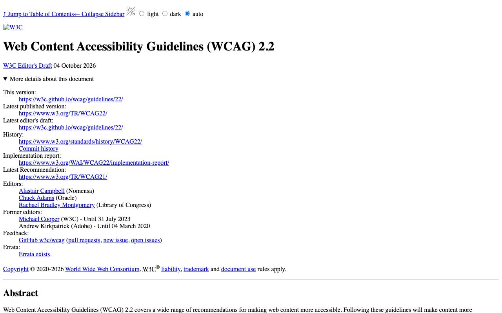
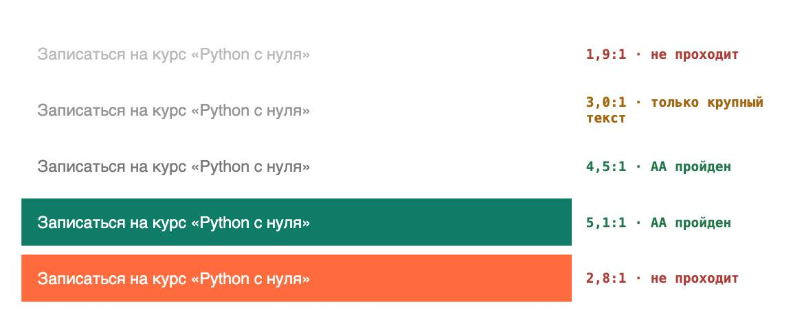

Справочник «Стандарты и сертификаты» · тема 3
Глава 10
Доступность интерфейсов:
WCAG и ГОСТ Р 52872
Сайтом пользуются люди, которые плохо видят, не пользуются мышью или слушают страницу через программу экранного доступа. Требования к доступности записаны в WCAG и в российском ГОСТ Р 52872-2019. В главе разобраны принципы, уровни и самые частые нарушения с примерами разметки.
- Документы
- WCAG 2.2 (W3C, 2023) · ГОСТ Р 52872-2019 · WAI-ARIA
- Уровень
- Базовый
- Где встречается
- Сайты госорганов и школ, требования заказчиков, мобильные приложения
- Зачем это знать
- Чтобы интерфейсом мог пользоваться каждый
§1Принципы и уровни
WCAG (Web Content Accessibility Guidelines) — рекомендации W3C. Действующая версия 2.2 опубликована в октябре 2023 года. Требования сгруппированы по четырём принципам и проверяются критериями успеха трёх уровней.
- Подписи к изображениям
- Достаточный контраст
- Субтитры к видео
- Всё работает с клавиатуры
- Достаточный размер кнопок
- Нет мигания чаще трёх раз в секунду
- Язык страницы указан
- Ошибки в форме объяснены
- Поведение предсказуемо
- Корректная разметка
- Роли и состояния для программ экранного доступа
Уровень A — минимум, без которого частью интерфейса не воспользоваться. AA — уровень, который обычно требуют заказчики и законы разных стран. AAA — повышенный, целиком его не требуют.

ГОСТ Р 52872-2019 действует с 1 апреля 2020 года. Он разработан на основе WCAG 2.1 и распространяется на сайты, мобильные приложения и другие пользовательские интерфейсы.
§2Контраст и размер
Критерий 1.4.3 уровня AA: контраст обычного текста с фоном — не меньше 4,5:1, крупного (от 18 пунктов или 14 пунктов полужирного) — не меньше 3:1.

Критерий 2.5.8, новый в WCAG 2.2, уровень AA: цель для нажатия — не меньше 24×24 CSS-пикселей, либо вокруг неё достаточно свободного места.
§3Разметка: частые нарушения
Изображение без подписи
<img src="course-python.jpg">
<img src="course-python.jpg"
alt="Ноутбук с открытым редактором кода">
<!-- декоративное изображение -->
<img src="wave.svg" alt="">Программа экранного доступа прочитает слева имя файла. Справа она прочитает смысл, а декоративное изображение с пустым alt пропустит.
Поле формы без подписи
<input type="email" placeholder="Почта">
<label for="email">Адрес электронной почты</label> <input id="email" type="email" autocomplete="email" required>
Подсказка внутри поля исчезает при вводе и не всегда озвучивается. Подпись label связана с полем и видна всегда.
Кнопка из блока
<div class="btn" onclick="signup()">Записаться</div>
<button type="button" onclick="signup()">Записаться</button>
До блока div не добраться клавишей Tab, и он не нажимается клавишей Enter. У элемента button это поведение встроено.
Ошибка, переданная только цветом
<input class="red-border" id="phone">
<input id="phone" aria-invalid="true" aria-describedby="phone-err"> <p id="phone-err">Номер должен начинаться с +7 и содержать 11 цифр.</p>
Красную рамку не видит человек с нарушением цветового зрения и не озвучивает программа. Справа ошибка названа словами и связана с полем.
<html lang="ru"> ... <h1>Регистрация ученика</h1> <h2>Данные ученика</h2> <h2>Согласие родителя</h2>
§4Как проверить
| Способ | Что находит |
|---|---|
| пройти страницу только клавишей Tab | недоступные кнопки, потерянный фокус, ловушки |
| Lighthouse в браузере, раздел Accessibility | контраст, подписи, роли |
| axe DevTools | нарушения с номерами критериев WCAG |
| программа экранного доступа NVDA или VoiceOver | что услышит незрячий пользователь |
| увеличить масштаб до 200 % | обрезанный и наезжающий текст |
Автоматические проверки находят только часть нарушений. Остальные видны при работе с клавиатуры и с программой экранного доступа.
§5Частые ошибки
§6Проверьте себя
- Назовите четыре принципа WCAG.
- Чем уровень AA отличается от A и AAA?
- Какой контраст нужен обычному тексту по критерию 1.4.3?
- Почему placeholder не заменяет label?
- На какой версии WCAG основан ГОСТ Р 52872-2019 и на что он распространяется?
2.2, 2023P · O · U · RA · AA · AAAГОСТ Р 52872-20194,5:1 — текст3:1 — крупный24×24 — цель200 % масштабaltlabel forbuttonlang="ru"aria-describedbyСправочник «Стандарты и сертификаты» · глава 10Макаров Максим Николаевич